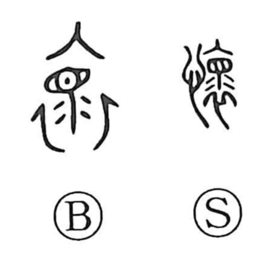

懐

Kun: futokoro, natsukashii, natsukashimu, natsuku, natsukeru, omou, idaku | On: kai
bosom ・ pocket ・ to long for ・ to yearn for ・ to cherish ・ to think of
Explanation
The original form is 懷, a phono-semantic compound with the heart element indicating emotion and the component 裹 supplying the on-reading kai. Shirakawa explains 裹 as clothing (衣) combined with a graph of tears, picturing one weeping into the collar of mourning garments. From this image of grief for the dead arose the nuances of tender lament and affectionate remembrance: to think of someone in one’s heart, to long for the past (as in 懐古), to feel attachment and nostalgia. By extension it also names the bosom or pocket—the place close to the heart where such feelings, and cherished things, are kept.